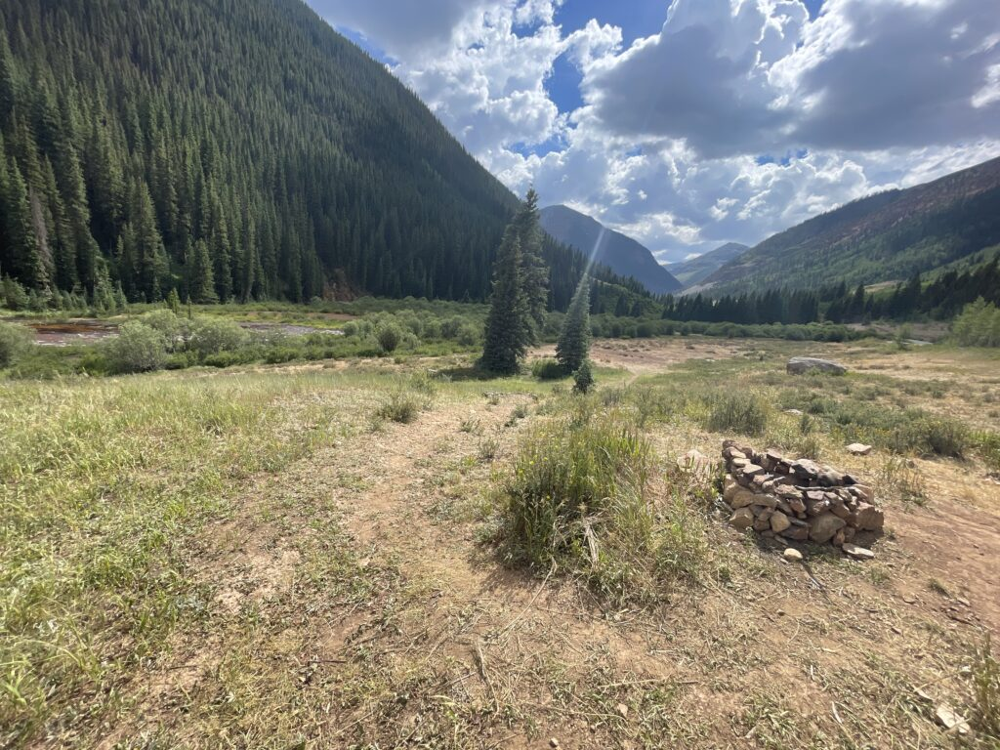
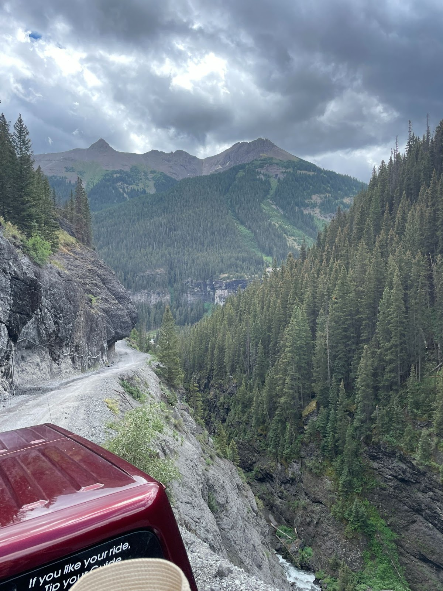
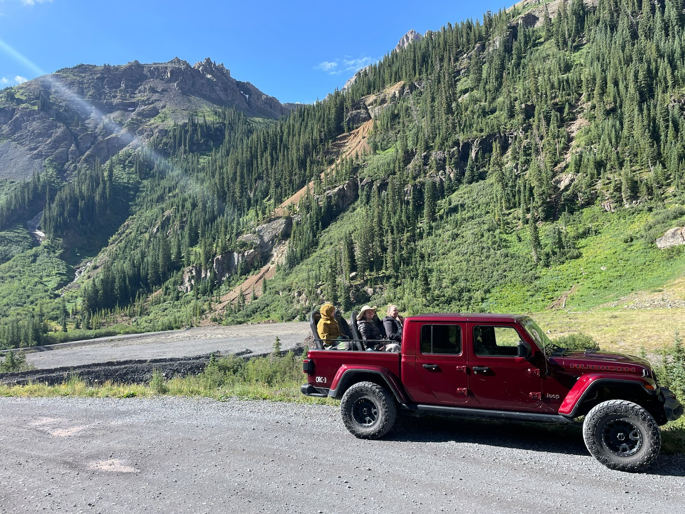
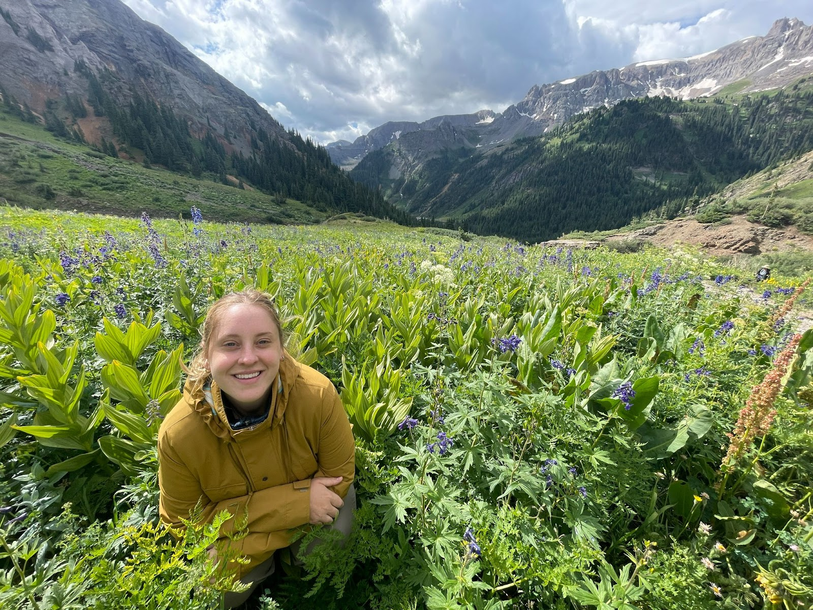
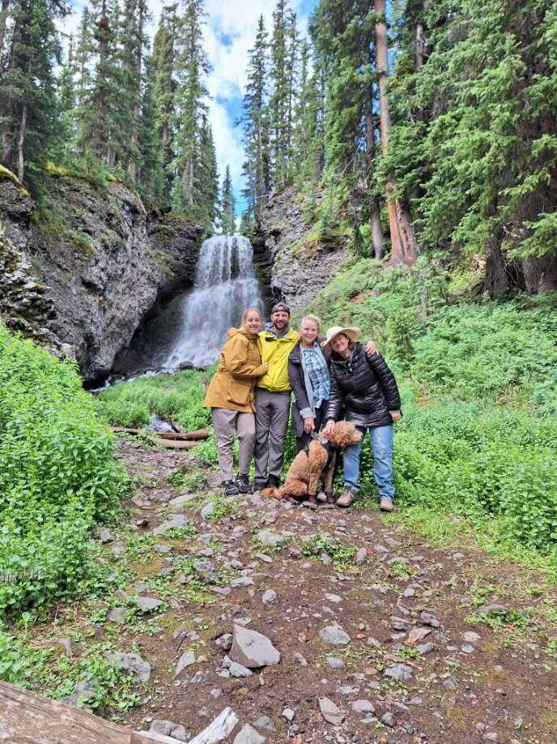
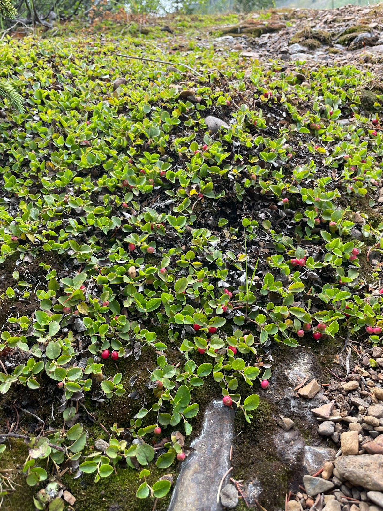
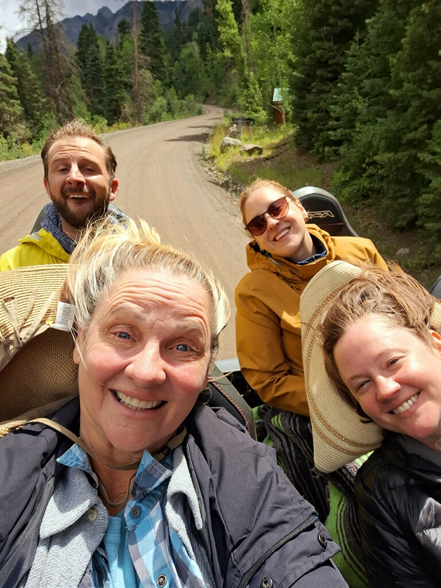

Last Monday we turned in all the needed docs to our travel agent, or so we thought.
After turning in our visa papers, Marissa and I headed to Silverton, CO to do a week-long camping trip with her mother and sister while we wait on our visa’s.
Man, why don't people talk about the beauty of the San Juan mountains more often? And they are only 6 hours from where we are staying in Show Low, AZ. If you're in AZ and are the outdoors type, add the San Juan mountains to your travel list.
We drove up Monday and set up camp. Jessica, Marissa's sister, is a traveling henna artist, who had a fair the next week in that general area.
The drive up is sooo pretty:

Just past Silverton, CO as the Million Mile Highway begins, state route 585 is off to the left. You turn left down that road and there are several open space (and free) campgrounds along with tons of primitive spots on the river. Jessica stays in this area every year because of its beauty.
Road 585 goes in between two mountain ranges, so you are sleeping in a canyon with massive mountain peaks all around you and the sound of a river every night. Here's a photo of the campsite:

You can just pull off the road and walk down to the river and camp. One thing I love about the west is all the open land that you can use for free. The mountains are more vast than the east AND it's free?
Explain that one.
I guess the downside is there are no reservations, so if you’re living in our scheduled driven world, you might not find the exact spot you wanted.
Anyway, the next morning we all woke up and went on a Jeep tour. This wasn't one of those pink jeep tours that casually goes through trails, this was an offroad, rock crawling trip. We were taken up past the alpine into the open rocky mountain peaks. Then down through the forests and to lakes. This stretch of CO is all old mining territory, so there were lots of old mine shafts and wood structures.




Towards the end of the jeep ride Scott gets a text from the visa agent,
“Call me”
We are sitting in the bed of this jeep truck thing as we are rock climbing up the mountain and Scott calls the agent.
The agent said the other agent worker is at the LA consulate right now and they are saying we need a more detailed invitation letter.
So, Marissa starts typing up a more detailed invitation letter in the back of this jeep. This is Marissa inviting me to stay with her in China. We had written one but it wasn't good enough, they wanted more of a list style itinerary and less of a letter.
Marissa gets it finished and we email it out.
We finished the day walking around Silverton, CO.
Other events from the week include tent sleeping in the wildest thunderstorm on earth, Scott screaming like a little girl as he gets in the glacier-fed river butt naked, $21 s’mores ingredients, overpriced-mediocre food, overpriced and great food, and lots of firewood gathering in the aspen forest.
Oh, and Scott found these berries that he couldn't identify. They look like kinnikinnick berries but tasted really good.
None of us died.

And the smell of aspen trees needs to be an air freshener.

I cannot express how beautiful this part of the country is. We've been to Glacier NP and this is equally as beautiful.
On our drive back to Arizona we stopped to see Scott’s friend Randy who recently purchased 80 acres just outside of Durango, CO.
It was impressive to see the beginning stages of his land development. We chatted a lot about how, as long as you’re open to it, all of the things you have to learn (aka deal with) in a new life adventure, like developing land, is the funnest part of life’s adventures.
It's the same with having kids. Or moving to a new town.
You GET to learn all these new things as it’s a first time adventure.
They dont have to be stressors as long as you frame it as an exciting privilege.
Randy GETS to learn how to navigate water rights (his land has a creek flowing through it), he gets to learn how to use an excavator and skid steer, he gets to learn how to create a postal address from scratch.
In life it’s important to be excited for the challenges you are facing.
And us moving to China, visa inculded, is going to be one huge test of this concept. We GET to learn about the Chinese language. We GET to learn about Chinese government first hand, and we GET to learn about the visa process.
Anyway, we get back to Arizona Friday and still hadn't heard anything about our visa’s (the internet says it should be four days after the initial document submission at the Chinese consulate, and the internet is always correct).
So on Monday we call our agent and he goes, “oh, I meant to call you, yea I have your visas"
Really buddy??
So, after all our visa stress, we finally were able to get some flights booked!!
Our visas are only good until November 2023 (it’s August 2023). Apparently the visa saga continues after you arrive to China.
Once you arrive in China, because it’s a work visa, we must go to the police station with someone from our job to prove we are there with them and we are ourselves.
These guys really protect their country from people entering.
It’s quite impressive really.
We sent our school (our employer) photos of the visas and the next day we had our flights booked!!!
We fly out of Phoenix this Saturday evening.
Sh*t just got real.
There were so many 'hurry up and wait' situations.
But now it's real.
Now we are going to China.
Time to hunker down and get our stuff in order.
Because we didn't know our exact departure day, many to-do items were floating around until we could plug in a departure date. Things like car insurance, health insurance, phone plan changes, changing car oil for storage, prepping renters for little contact, or adding others to bank accounts. They all revolve around knowing when we are leaving.
So our next few days will be busy.
Scott has 2 cars, his Civic and a camper van, which need prepared for 2 years of sitting. He has cleared a part of Laurie’s land for them to park on.
Laurie, Marissa’s mother, will be driving us from Show Low, AZ to Phoenix on Friday morning.
We opted to not have the visa agent mail us our visa’s to eliminate one additional risk, so we will first go to the visa office, which is in Tempe, AZ.
Then we are staying with friends Friday night and Saturday Scott's mother is driving up from Tucson to spend the day with us prior to our flight.
We also have some last minute shopping to do for supplies. These are supplies we’ve heard are hard to get in China, not as popular, or the things you really don;t want to compromise on. This is mainly medicine / bathroom items like claritin, dayquil, soap and deodorants.
Also, Asian’s are smaller in general, so Marissa has a hard time finding clothes / shoes in China, so she wants a few new pairs of shoes to get her through our two year journey.
Each of us has two checked suitcases, one carry-on suitcase, and one backpack. One of Scott’s bags is clothes, which mainly includes non-everyday clothes like suits, ties, rainjackets, and dress shoes. Things I like and make me, me.
Clearly Scott is typing this.
Scott’s other suitcase is sentimental items and tech gear. I have important documents (diploma, scanned copies of passport, visa, birth cert, etc), photos and frames of Marissa and I, drone, DSLR camera, tripod, yeast / baking pan (I just don't want to have to shop for yeast in China), and other random toiletries.
All of Marrissa's bags are clothes. Lots of clothes. Plus some clothes. And some toiletries.
We packed our bags two months ago when we moved out of the apartment and have been living out of those suitcases but tomorrow we pack for real, for real.
When we pack I'll make sure to take photos and post about exactly what we are taking with us.
Because what does one take for a 2 year adventure?
It’s insane, this time next week we won't be able to walk into a store and ask for what we want using our words.
Talk soon